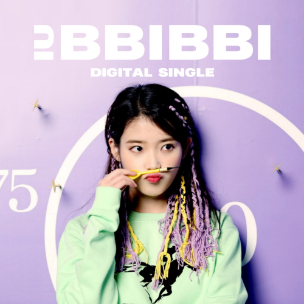

올 해로 꼭 데뷔 10주년을 맞이한 아이유가 디지털 싱글 ‘삐삐'를
발표한다.
아이유의 10주년을 기념해 10월 10일 발표된
디지털 싱글 ‘삐삐'는, 아이유가 데뷔이후 처음으로 도전하는
Alternative R&B 스타일의 곡으로, 관계에 있어 무례하게 선을 넘는
사람들에게 던지는 유쾌하고 간결한 경고의 메시지를 담고 있다. 타인을
자신만의 기준으로 통제하거나 규정짓지 않는, 동등하고 독립적인 개개인
간의 건강한 유대관계가 어느 때보다 중요시 되는 요즘, 지금을 사는
모든 현대인들의 이야기가 될 수 있는 곡이다.
클래식한 정통 발라드곡 '미아'를 통해 열여섯의 어린 나이로 데뷔한
아이유는,
지난 10년 간 장르의 경계를 뛰어넘는 음악적 역량과
한계를 모르는 다채로운 매력으로, 현 가요계에 유일무이한 뮤지션이자
아티스트로서 놀라운 성장을 거듭해왔다.
10년이라는 시간의 무게처럼 깊이 있는 싱어송라이터 겸 프로듀서로도 점차 진화하고 있는 아이유가, 직접 프로듀싱과 작사에 참여한 이번 싱글 ‘삐삐'는, 여전히 보여줄 것이 무궁무진한 그녀의 팔레트처럼 대중들로 하여금 아이유의 또 다른 10년을 기대케 해준다.
데뷔 10주년을 맞이했음에도 그에 대한 사람들의 호기심은 여전하다. 그
이유가 뭘까.
돌아보면, 3집 < Modern Times > 이후 장르적
변화를 지속적으로 감행했음에도 그 결과물엔 자신의 정체성을 탁월하게
녹여내 왔다. 대중들의 기대에 백프로 부응하기보다는 그보다 반보 앞을
바라보며 사람들이 받아들일 수 있는 범주의 파격을 유지해 왔다는
이야기다. 그리고 이 곡 역시 이러한 아티스트의 지향점이 잘 드러나
있는 곡으로 자리한다.